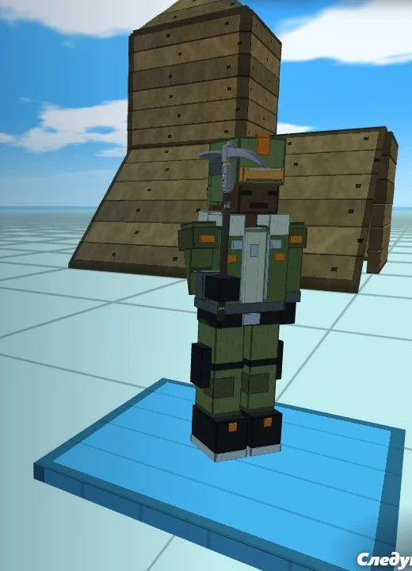

3.0ТекущаяНовая глава
Йосыпнайт. Новая глава
Новое лобби, управление с телефона, Эндер-баксы и магазин. Больше скинов, кирок, эмоций и озвученных фраз.
От первых построек до Йосыпнайта.
Выбирай версию, запускай игру
и вспоминай, как всё было.
Теперь и на телефоне. Новое лобби, Эндер-баксы, магазин и ещё больше способов собрать свой стиль.

Новое лобби, управление с телефона, Эндер-баксы и магазин. Больше скинов, кирок, эмоций и озвученных фраз.
Волны зомби в одиночной и совместной игре, толстяки с третьей волны. Меню эмоций и фраз, более плотные стены.
Детальные модели бойца и разведчицы, полупрозрачные постройки и настройка стрельбы от правого плеча.
Тренировочная карта с манекенами, свободная карта, стартовые рампы и новый персонаж — Разведчица.
Скины и кирки с 3D-предпросмотром и сохранением выбора. Правый пик и исправления диагональных срезов.
Камера больше не позволяет стрелять сквозь стены. Проверка всех дробинок одного выстрела и исправление высоты пики.
Постепенная сборка дерева, камня и металла, объёмные материалы, исправления пики и проверка опор после редакта.
Анимация сборки построек, новые текстуры материалов, пика и настройка урона кирки по игрокам и постройкам.
Сквозной проход при редактировании конуса с полом. Исправлено прохождение сквозь рампы и другие постройки.
Исправлены значения NaN в ползунках настроек консоли, из-за которых ломалась камера.
Консоль на клавишу «ё»: помощь, очистка, счётчик FPS и закрытие командами help, clear, fps и close.
Диагональные угловые редакты стены и исправление застреваний при подъёме по рампам со стенами.
Полы и конусы ставятся под прицелом, стены — на выбранном краю клетки, включая диагональные направления.
Твёрдые рампы, конусы и полы, корректные опоры и размещение перед стеной. Новые угловые редакты стен.
Постройки целятся в одну клетку. Лестница упирается в стену — можно строить рамп-раш.
Баланс скорости, допустимые редакты с подсветкой выбора и выталкивание наверх из появившейся постройки.
Бег со стаминой, приседание и применение редакта при отпускании кнопки мыши.
Звуки боя и движения, громкость, обрушение построек без опоры и превращение конуса в скат.
Комнаты по коду и прямое соединение между браузерами. Камера от третьего лица.
Одна из ранних сборок игры до появления онлайна. Сохранённая версия 0.4.
Одна из ранних сборок игры до появления онлайна. Сохранённая версия 0.3.
Самая ранняя сборка в этом архиве. Вернись к истокам Фрибилда.
Попробуй другую версию, слово или поколение игры.